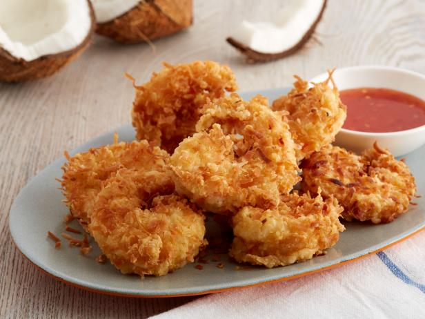

Coconut Shrimp I

Description
These crispy shrimp are rolled in a coconut beer batter before frying. For dipping
sauce, I use orange marmalade, mustard and horseradish mixed to taste.
Ingredients
- 1 egg
- ½ cup all-purpose flour
- ⅔ cup beer
- 1 ½ teaspoons baking powder
- ¼ cup all-purpose flour
- 2 cups flaked coconut
- 24 shrimp
- 3 cups oil for frying
Steps
In medium bowl, combine egg, 1/2 cup flour, beer and baking powder. Place 1/4
cup flour and coconut in two separate bowls.
Hold shrimp by tail, and dredge in flour, shaking off excess flour. Dip in
egg/beer batter; allow excess to drip off. Roll shrimp in coconut, and place
on a baking sheet lined with wax paper. Refrigerate for 30 minutes. Meanwhile,
heat oil to 350 degrees F (175 degrees C) in a deep-fryer.
Fry shrimp in batches: cook, turning once, for 2 to 3 minutes, or until golden
brown. Using tongs, remove shrimp to paper towels to drain. Serve warm with your
favorite dipping sauce.